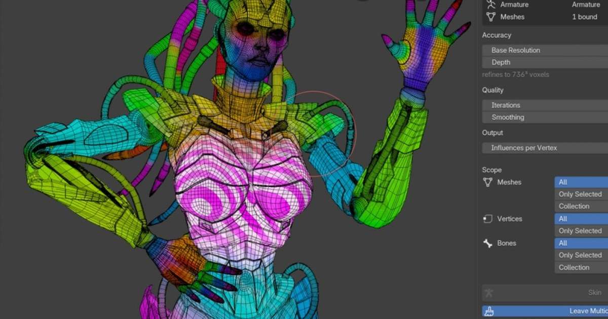

Blender Adaptive Auto Skinning：GPU 體素權重自動綁定
Adaptive Auto Skinning 以體素化方式分析骨架與網格，將身體與服裝一起自動產生 skin weights，並以 GPU 加速處理。

綁定 ★★★★★
完整分析
技術／流程變更
工具先把角色體積轉成自適應體素，再依骨架實際形狀傳播權重，不依賴 bone naming；身體、衣物與手指等靠近區域可一起處理，並以 GPU 執行求解。
Production 影響
對大量角色初始 skinning、外包模型回收與服裝快速換裝特別有價值，可把人工權重塗抹前的基礎作業壓縮成自動初稿，再由美術針對關節與極端姿勢修正。
導入測試與限制
目前證據主要來自作者展示，實際品質仍需用肩胯、手指貼近、裙甲與非人形骨架做 deformation stress test；自動權重不應直接取代最終 QA。
BRIEF｜來源已驗證；證據深度較有限，完整分析會明確區分已知資訊與待驗證事項。